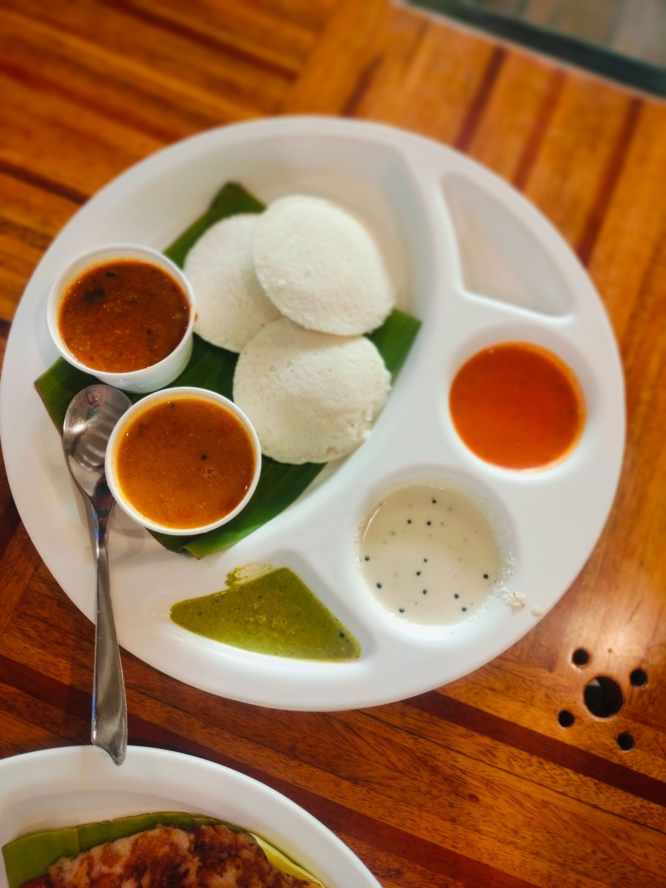
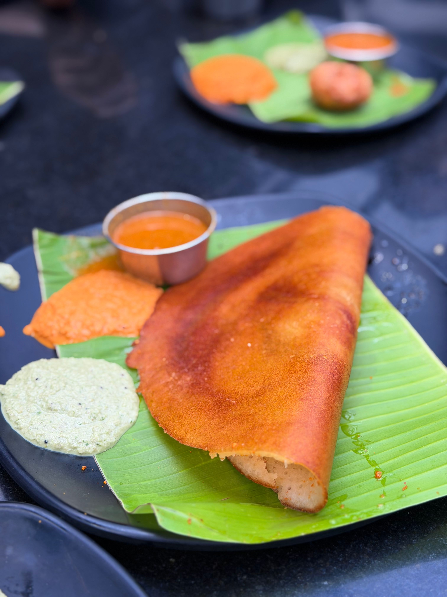

About Us
AK was started in in Chennai. We serve fresh, home-cooked food made with love. No preservatives, no shortcuts — just like Amma makes it.
We use fresh ingredients every day. Our sambar masala is ground fresh every morning.
Fresh home food, made with love

AK was started in in Chennai. We serve fresh, home-cooked food made with love. No preservatives, no shortcuts — just like Amma makes it.
We use fresh ingredients every day. Our sambar masala is ground fresh every morning.
| Item | Qty | Price |
|---|---|---|
| Idli | 2 pcs | ₹30 |
| 4 pcs | ₹55 | |
| 6 pcs | ₹80 | |
| Dosa | 1 pc | ₹40 |
| 2 pcs | ₹75 | |
| 3 pcs | ₹110 | |
| Pongal | 1 plate | ₹50 |
| 2 plates | ₹95 | |
| Filter Coffee & Tea — ₹15 | All prices include GST | ||


The food here tastes just like home. Best idli in Chennai!
— Ramesh, Chennai
Fresh and tasty. I come here every morning.
— Priya, Chennai
We are open all 7 days. See opening hours.
Yes, free two-wheeler parking is available.
Yes! Call us at +91 98765 43210 for bulk orders.